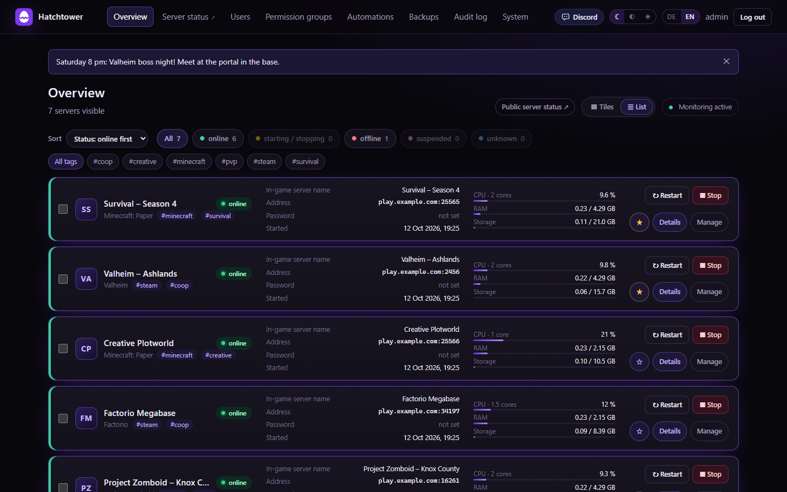
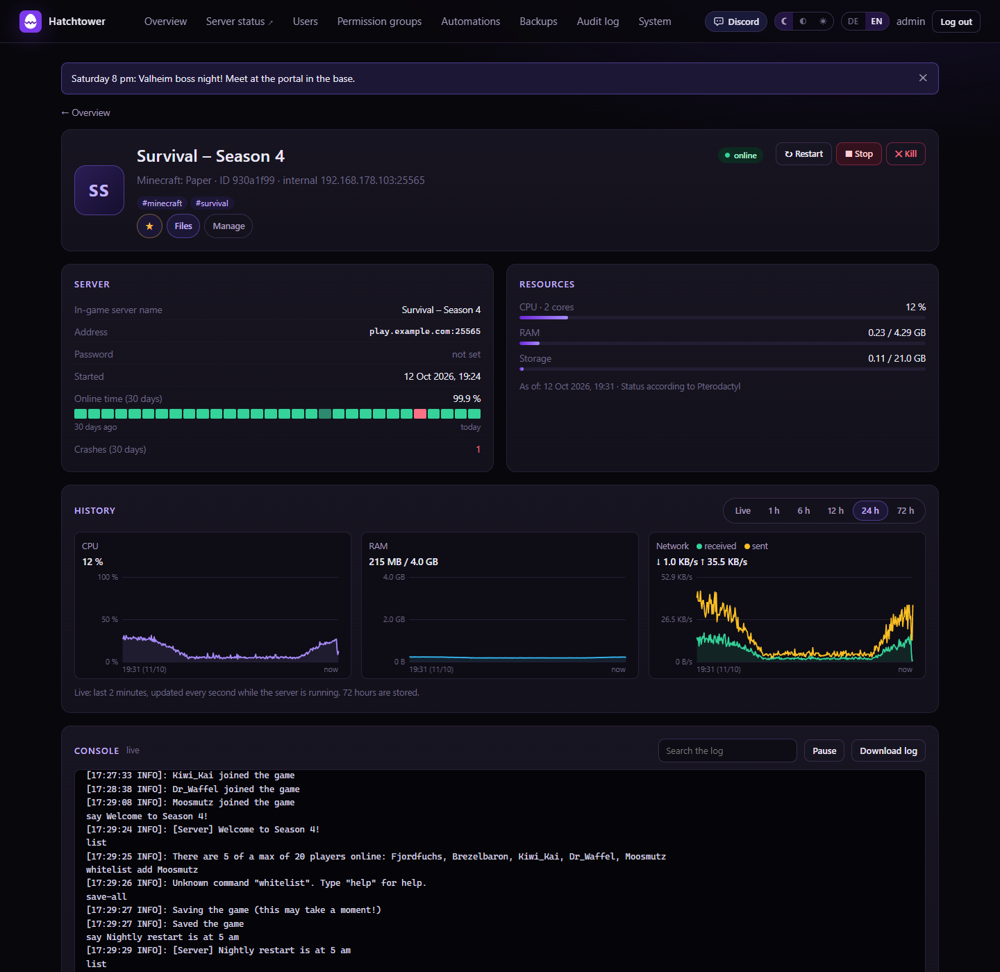
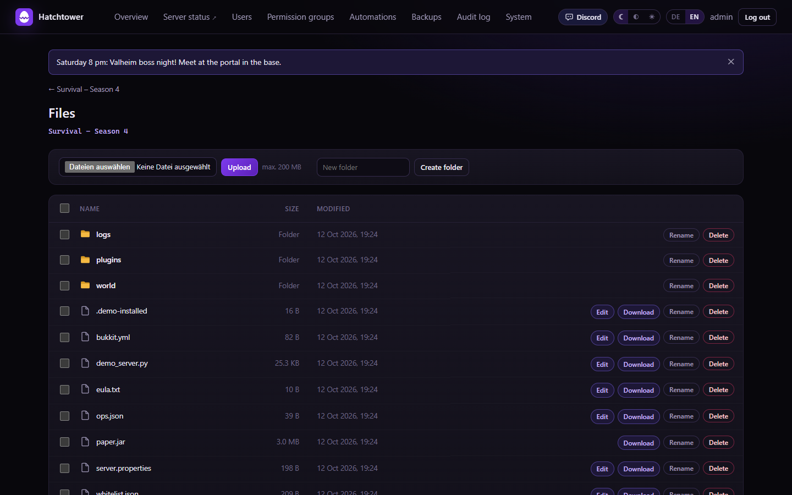
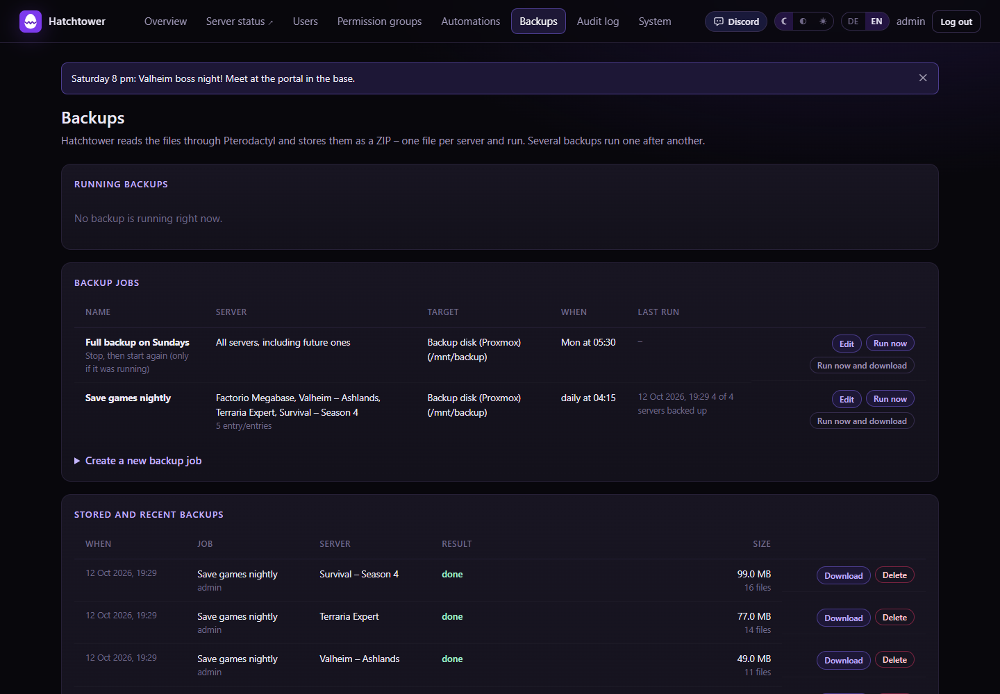

Hatchtower
A simple, safe web interface for your game servers – for you and your friends, without putting your server panel on the internet.
View on GitHubDocumentation (README)Hatchtower is a self-hosted game server dashboard for Pterodactyl, Pelican and Calagopus. It is not related to Watchtower, the Docker container updater.
Features
- Simple view for friends: status, address, start/restart – also on phones
- Live console, CPU/RAM/disk graphs, uptime and a players tab
- Permissions per user and server, permission groups and invite links
- File manager: view, upload, download, edit, rename, delete
- Backups to a drive or SMB share, checked and restorable in a few clicks
- Automations: restart after a crash, scheduled starts, stops and restarts
- Notifications via Discord/webhook and email, audit log, optional public status page
- Works as an app on phones, dark and light theme, English and German
Screenshots




Installation
Proxmox, as a new container:
bash -c "$(curl -fsSL https://raw.githubusercontent.com/skaot1910/hatchtower/main/proxmox/install.sh)"
Existing Debian or Ubuntu machine:
bash -c "$(curl -fsSL https://raw.githubusercontent.com/skaot1910/hatchtower/main/installer/get.sh)"